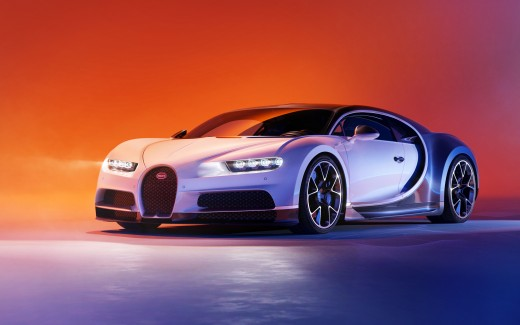

La Bugatti Type 57 est un des modèles les plus emblématiques et mythiques de la marque de voiture de sport de luxe et de prestige Bugatti,
et de l'automobile de sport de luxe mondiale des années 1930. Ultime création d'élite, de record de vitesse, de grand luxe, de prix, et d'excellence mécanique de Jean Bugatti
(fils héritier d'Ettore Bugatti) elle est présentée au Salon de Paris 1933, commercialisée à 685 exemplaires en de nombreuses variantes de carrosserie individualisées, entre mars 1934 à mai 1940,
et victorieuse en particulier des Rallye des Alpes françaises 1935, Grand Prix automobile de France 1936, 24 Heures du Mans 1937, et 24 Heures du Mans 19392. En 2010,
la première des trois Bugatti Type 57SC Atlantic 1936 (déclinée du concept-car Bugatti Aérolithe de 1935) est vendue aux enchères à la Collection Peter Mullin,
pour une somme entre 30 et 40 millions de dollars (entre 23 et 31 millions d'euros), voiture la plus chère à ce moment, record battu depuis par une Ferrari 250 GTO[réf. nécessaire].
Comme le disait le Ettore Bugatti
La Bugatti EB 110 est le premier véhicule de la société depuis la reprise de la marque Bugatti par Romano
Artioli en 1987 et la création en 1989 de Bugatti Automobili SpA1. L'EB 110 a été présenté le 15 septembre 1991,
célébrant le 110e anniversaire de la naissance d'Ettore Bugatti, et produite à partir de 1992. L'EB 110 a été
la première voiture produite depuis 1956, relançant dès lors cette marque automobile légendaire.
Deux versions sont proposées :
Une version « de base », d'une puissance de 560 ch à 8 000 tr/min, mue par un moteur V12 à 60 degrés et
à quatre turbos d'une cylindrée de 3,5 litres. Elle est, à l'époque, l'une des voitures les plus performantes
au monde. La voiture était proposée au prix de 2 964 000 FF.
Un modèle plus puissant et plus léger, apparu en 1992, avec une puissance de 603 ch (450 kW) à 8250 tr/min.
Dénommée « SS EB110 » (SS pour « Super Sport »), cette voiture est capable d'atteindre une vitesse de pointe
de 355 km/h et couvre le 0 à 100 km/h en 3,26 secondes.
La Veyron 16.4 (/vɛʁɔ̃/) est une supercar du constructeur automobile français Bugatti produite de 2005 à 2015, atteignant la vitesse de 431,072 km/h dans sa version Super Sport, elle était alors la voiture de série la plus rapide du monde. Assemblée à Molsheim en Alsace, elle est dévoilée en 2000 lors du Mondial de l'automobile de Paris sous la forme de l'étude de style EB 18/4 Veyron. Les premiers exemplaires sont sortis d'usine le 19 avril 2005. En 2008, apparaît un modèle « Grand Sport » puis en 2010 la version extrême « Super Sport », et finalement une version "Grand Sport Vitesse" en 2013. Conçue entièrement en Europe par le groupe VAG, propriétaire de la marque, ainsi que par quelques partenaires spécialisés ; toutes les pièces de la Veyron sont fabriquées en Europe et assemblées par une petite équipe. Cinq personnes et trois semaines de travail sont nécessaires pour son assemblage. Toutes les réparations relatives au moteur, à la carrosserie ainsi que son entretien courant sont réalisées aussi à Molsheim. Chaque exemplaire porte une plaque avec son numéro de châssis.

La Bugatti Chiron est présentée au salon de Genève 2016 et sa sortie était prévue pour l'automne de la même année4. La Chiron reprend le même bloc-moteur W16 de la Veyron 16.4 tout en l'améliorant, pièce par pièce pour en obtenir une puissance et un couple accrus sans modifier la cylindrée. Ce moteur développe 1 500 ch et propulse l'engin à 420 km/h4, vitesse limitée électroniquement par le constructeur. Son rapport poids/puissance est de 1,3 kg/ch, et son rapport couple/poids est de 802 Nm/t. En 2015, Bugatti annonçait une centaine de précommandes3. Fin 2016, le constructeur prévoyait la production de 500 exemplaires au total, soit cinquante de plus que sa devancière. Dans le même temps, 220 commandes sont reçues et une voiture est livrée5. En 2017, 300 des 500 Chiron ont été commandées, et 70 ont été livrées pour sa première année de production6, dont la première aux États-Unis, pays qui représente 30 % des commandes7 de Bugatti. En mai 2018, Bugatti annonce la livraison du 100e exemplaire de la Chiron, qui est la première à recevoir sa carrosserie en fibre de carbone de couleur bleu marine matifié8. En juillet 2019, la 200e Chiron est sortie des ateliers, une Chiron Sport « 110 ans Bugatti »9. En mars 2021, la 300e Chiron est livrée, une Chiron Pur Sport intégralement noire10. En janvier 2022, Bugatti annonce que tous les exemplaires de la Chiron ont trouvé acquéreur. Avec moins de 40 unités encore à produire, la Chiron aura achevé sa production courant 202211.
le coté pour l'histoire d'Éttoré Bugattiiuukuhpob;lgs6rhygaèlenh5lkaebhpjERBH;JBREHN E;JSBLVDZT;NGBB ;EÙRSB SJBLKLRKSJB RSDG;VRKESGBS;SÙBV;SBG.;SJDBGSDVFKCVDGVKDZGVFkjdztbhtbhlkxfb hbks;hb lhb hjdlvghzvd gvkd v fbgbgdbvkljg.bv fjb vbffkhbvjk jhx vbf fiblfbglxkbfll dbdlbjlnbs